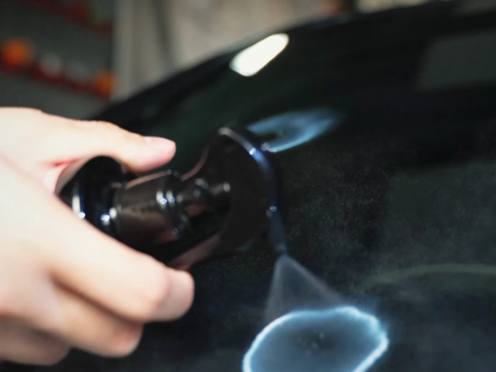
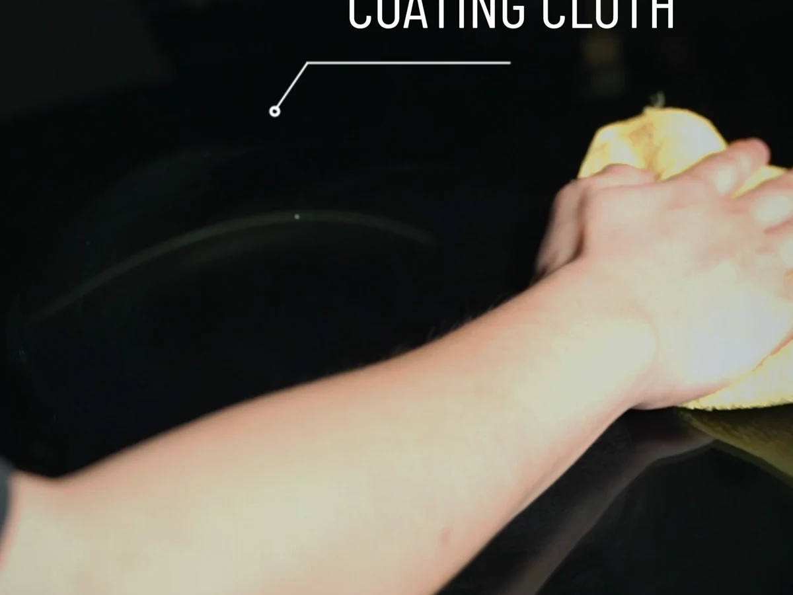
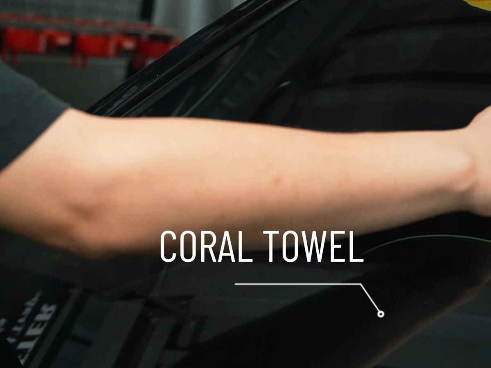
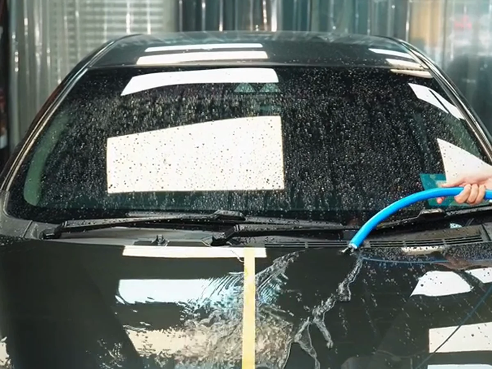
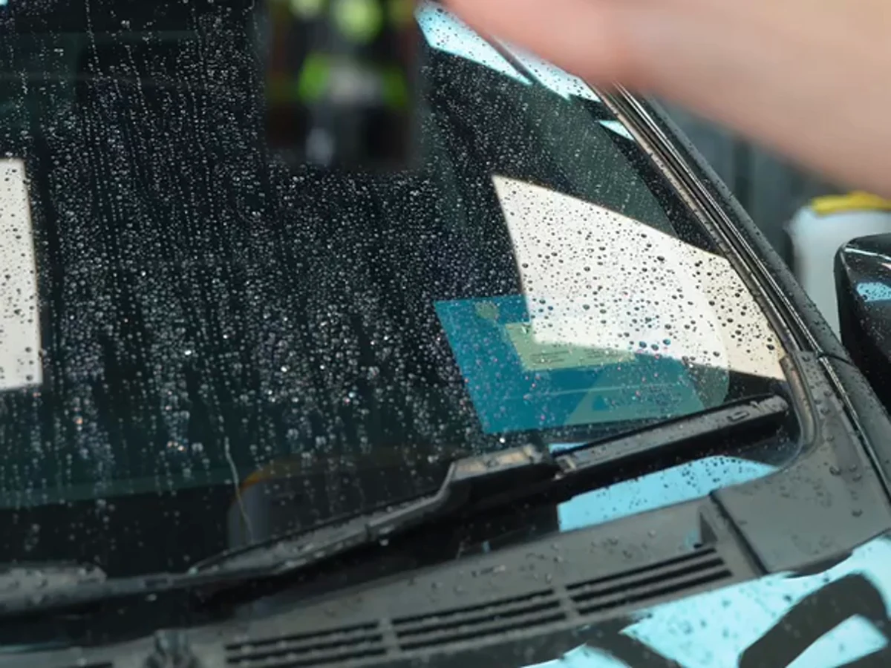
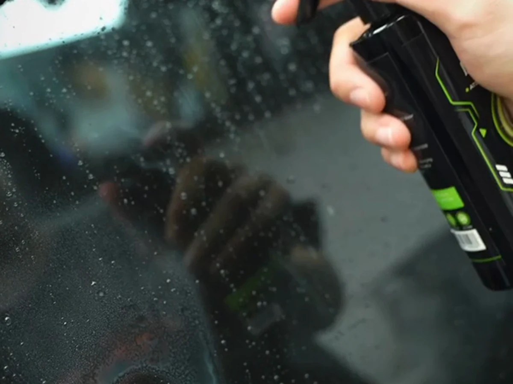
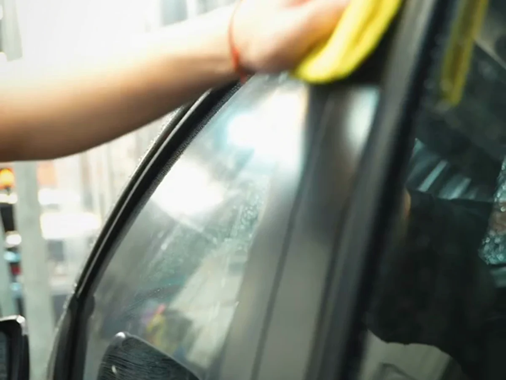

Deep-finish route

180days
up to
up to
APGO Atomic Series
Take the wash beyond clean. Choose D204 for a deeper, longer-wearing finish after drying—or D215 to add gloss and hydrophobic protection as you towel-dry.
Made in Taiwan Two purpose-built routines No machine required
Deep-finish route
Dry-and-finish route

02 / Beyond clean
Cleaning resets the paint. Finishing changes how it looks, how water behaves, and how long the just-detailed feeling stays with you.
01 / Depth
02 / Beading
03 / Control
03 / Choose your routine
Decide where the finish fits into your wash. Neither route is the default—the right one is the one you will actually use.
When do you want to apply?
For the finish-first detailer
Flagship deep finish
A dedicated spray, spread, and buff step for maximum gloss, aggressive water beading, and longer-wearing protection.
Amazon link pending
For the momentum-first washer
Finish as you towel-dry
Add gloss and hydrophobic protection before the final dry—turning the last step of your wash into the finish.
Amazon link pending
No finish selected.
04 / The real process
No guesswork. Choose a routine, then watch the actual hand application from first spray to final towel.
Start with the moment that fits your wash.
D204 / dry application
Wash and fully dry. Work one cool section at a time, then buff the product clear to reveal the finish.

01Move the car out of direct sun and let the paint cool before application.

02Build a thin, even layer with a clean microfiber towel.

03Turn to a clean dry side and finish the section before moving on.
D215 / wet application
Keep clean paint wet after washing. Apply and spread D215, then towel-dry to finish both steps together.

01Start with clean paint and rinse away the remaining wash solution.

02D215 goes on before the final towel-dry, not after it.

03Distribute the product across the wet section with a clean cloth.

04Remove the water and complete the finish in the same final pass.
05 / APGO, Taiwan
APGO began with a hands-on obsession: make every wash end in a finish worth turning back to look at.
Product development starts around real car-care routines and the finish enthusiasts chase by hand.
A Taiwan car-care brand takes shape around direct application, clear purpose, and visible results.
D204 and D215 give the same finishing instinct two distinct places inside wash day.
06 / Your finish
You have seen both routes. Choose the moment you want the finish to happen.
Compare D204 & D215Your route / D204
Flagship gloss and longer-wearing hydrophobic protection in a dedicated final pass.
Buy D204 on AmazonAmazon link pending
Your route / D215
Gloss and hydrophobic protection folded directly into the final towel-dry.
Buy D215 on AmazonAmazon link pending